Demand & stock
How much should we make and hold next month?
Seasonal forecasts with their error shown, and reorder points that keep you out of stock-outs without tying up cash.
Operations consulting · Pretoria
Takt is an operations consultancy. We start from the data your business already captures, measure where the losses are, rank them by what they cost you, and put the fixes in place.
Start a conversationHow it works
What we improve
How much should we make and hold next month?
Seasonal forecasts with their error shown, and reorder points that keep you out of stock-outs without tying up cash.
Where does the line lose output?
OEE split into availability, speed and quality losses, plus quality records you can trace and audit.
What does each product really cost us?
True cost per product and customer, so pricing and product-mix decisions rest on numbers, not averages.
Where is our cash tied up?
Debtors by risk and age, and ordering that takes the cash position into account.
How it works
We look at what you already capture — sales, stock, production and accounts — check its quality, and set a day-one baseline of what things cost today.
Every improvement we find, ranked by the money it is worth to you. You decide what goes ahead.
The fix itself: a process change, a forecast, an automated report, or a simple capture form for what isn't recorded yet. Built on top of your systems, not instead of them.
We keep the numbers honest month to month and help you act on them, measured against the baseline.
The audit stands on its own. Its findings decide whether anything else is worth doing.
Why Takt
Takt time, OEE, statistical process control and forecasting, applied to your floor and your books, not left in a report.
No new ERP and no rip-and-replace. We work from the systems and exports you already use.
Every recommendation states what it is worth, measured against the day-one baseline, so you can see whether it paid.
Client data is handled under a written data agreement. It is encrypted, kept apart from every other client's data, and returned or deleted when the project ends. Access is limited to the people who need it.
Takt time is the pace an operation has to keep to meet demand. Most businesses never measure it. They feel it when they fall behind.
About
Takt Operations Solutions was founded in 2026 by Winand Carstens, an industrial engineer based in Pretoria.
Takt brings the methods of industrial engineering together with practical data tools, for businesses that have outgrown spreadsheets but don't need a large consulting firm.
Winand Carstens — Founder & Director
Contact
A first conversation carries no obligation. Email or call, and we'll set up a time.